Алгоритм в стиле Scratch. Библиотека костюмов и сцен
Теоретический блок
Что такое алгоритм в стиле Scratch
Алгоритм в стиле Scratch — это последовательность команд, составленная из цветных программных блоков. Такие блоки соединяются друг с другом как детали конструктора и задают порядок действий персонажа на сцене.
Scratch — это визуальная среда программирования, в которой можно создавать интерактивные истории, игры, мультфильмы и небольшие учебные проекты. Вместо написания сложного текстового кода обучающиеся используют готовые блоки команд.
Каждый блок выполняет определённое действие: переместить персонажа, повернуть его, изменить костюм, сказать фразу, воспроизвести звук, сменить фон или повторить действие несколько раз.
Такой способ программирования похож на сборку конструктора. Обучающийся выбирает нужные блоки, соединяет их в правильном порядке и получает работающий алгоритм.
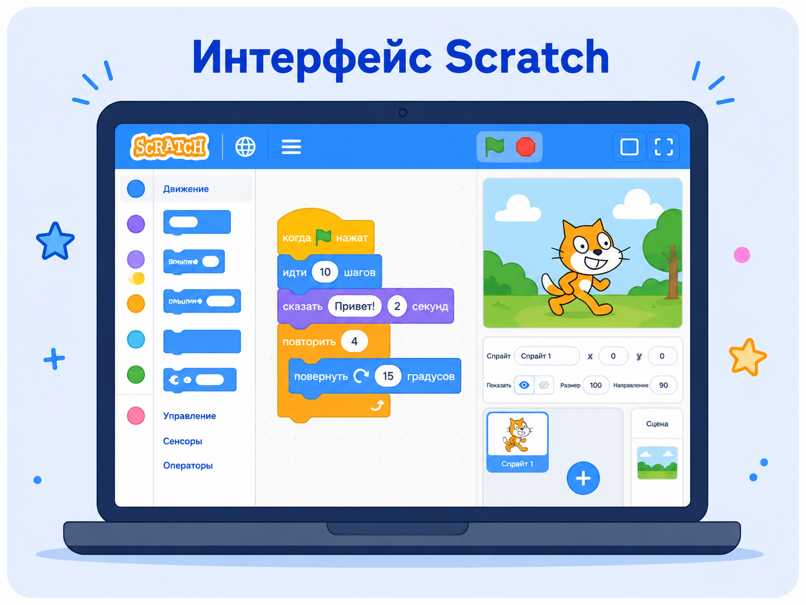
Интерфейс Scratch
На экране Scratch есть блоки команд, рабочая область, сцена и список персонажей.
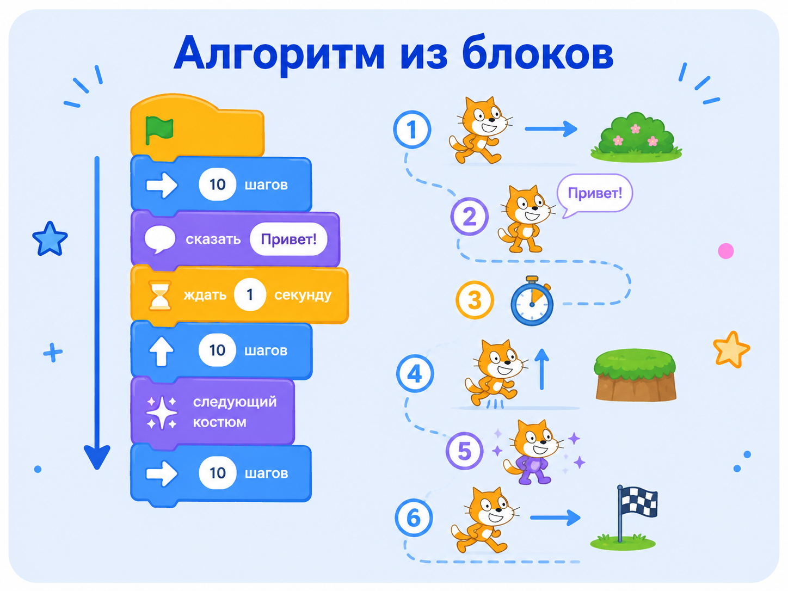
Алгоритм из блоков
Команды соединяются сверху вниз и выполняются в том порядке, в котором расположены в программе.
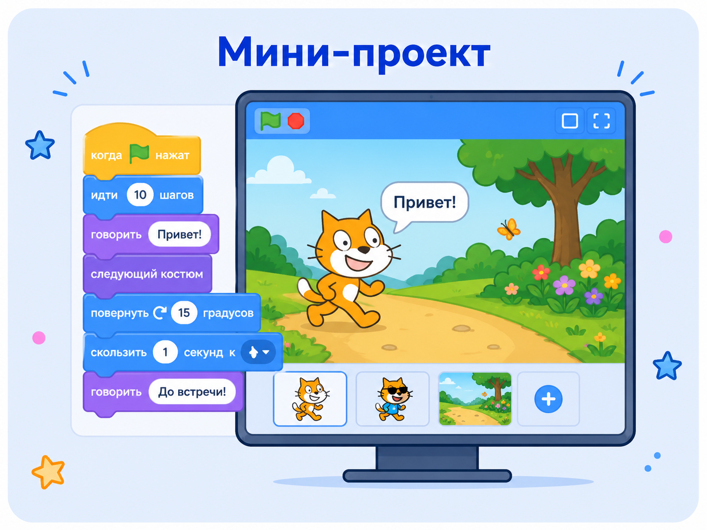
Мини-проект
В Scratch можно создать проект, где персонаж двигается, говорит, меняет костюмы и взаимодействует со сценой.
Основные элементы Scratch
Место действия
Сцена — это область, где происходит действие проекта. На ней отображаются персонажи, фоны, движения и анимация.
Персонаж проекта
Спрайт — это объект или персонаж, которым можно управлять с помощью команд. Например, кот, робот, мяч или любой другой герой.
Программа для спрайта
Скрипт — это набор соединённых блоков, который задаёт поведение выбранного спрайта.
Команды Scratch
Блоки — это готовые команды. Они разделены по цветам и назначению: движение, внешний вид, звук, события, управление и другие.
Как работает алгоритм в Scratch
В Scratch команды обычно выполняются сверху вниз. Сначала срабатывает стартовое событие, например нажатие на зелёный флажок. Затем выполняются остальные блоки, которые прикреплены к этому событию.
Пример логики алгоритма
Если команды расположить в другом порядке, результат тоже изменится. Например, если сначала спрятать персонажа, а потом заставить его говорить, пользователь может не увидеть героя на сцене. Поэтому порядок команд в алгоритме очень важен.
Пример
Если нужно создать анимацию шагающего персонажа, можно использовать команды движения и смены костюма. Персонаж сделает несколько шагов, а его внешний вид будет изменяться, создавая эффект движения.
Цветные категории блоков Scratch
Блоки в Scratch разделены на цветные категории. Каждая категория отвечает за определённый тип команд. Это помогает быстрее находить нужные действия и понимать, из каких частей состоит программа.
Синие блоки
Позволяют перемещать спрайт по сцене, поворачивать его, изменять координаты X и Y, задавать направление движения.
Фиолетовые блоки
Используются для смены костюмов, вывода реплик, изменения размера, скрытия или показа персонажа.
Розовые блоки
Позволяют воспроизводить звуки, запускать музыкальные эффекты и управлять громкостью.
Жёлтые блоки
Запускают выполнение программы. Например: «когда флажок нажат» или «когда клавиша нажата».
Оранжевые блоки
Используются для циклов, ожидания и условий. Например: «повторить 10 раз» или «если..., то...».
Зелёные блоки
Позволяют выполнять вычисления, сравнивать значения и создавать логические условия.
Категории блоков и их назначение
| Категория | Назначение | Пример команды |
|---|---|---|
| Движение | Перемещение персонажа по сцене | Идти 10 шагов |
| Внешний вид | Изменение внешности персонажа | Следующий костюм |
| Звук | Воспроизведение звуков | Включить звук |
| События | Запуск программы | Когда флажок нажат |
| Управление | Циклы, ожидание и условия | Повторить 10 раз |
| Операторы | Сравнения и вычисления | Больше, меньше, равно |
Библиотека костюмов
В Scratch каждый спрайт может иметь один или несколько костюмов. Костюм — это внешний вид персонажа. Если у персонажа несколько костюмов, их можно переключать во время выполнения программы.
Смена костюмов используется для создания анимации. Например, если у персонажа есть два костюма с разным положением ног, то при быстрой смене этих костюмов создаётся впечатление ходьбы.
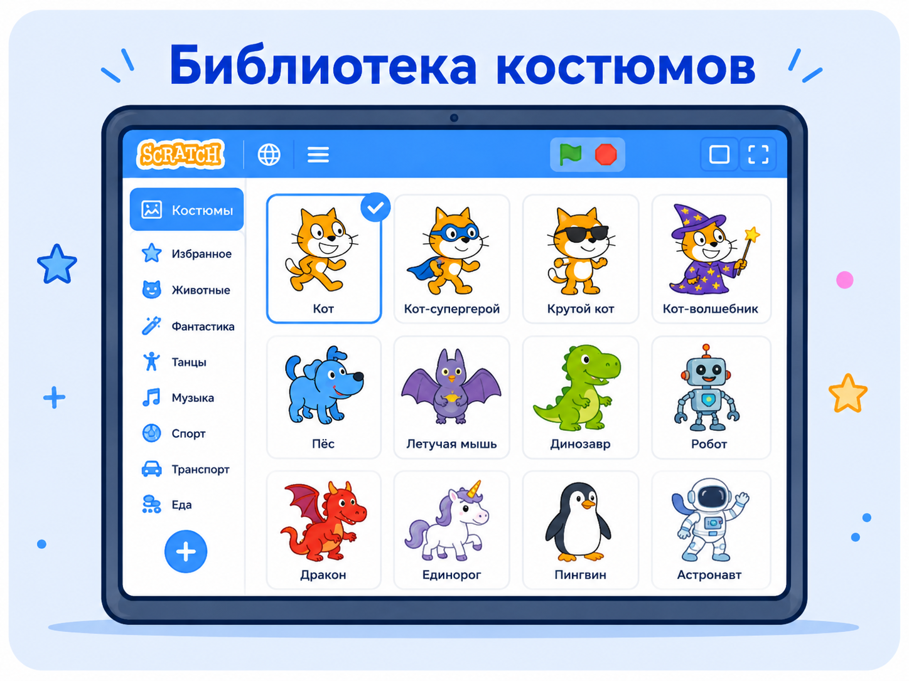
Библиотека костюмов
В библиотеке можно выбрать готовый спрайт или костюм для персонажа.
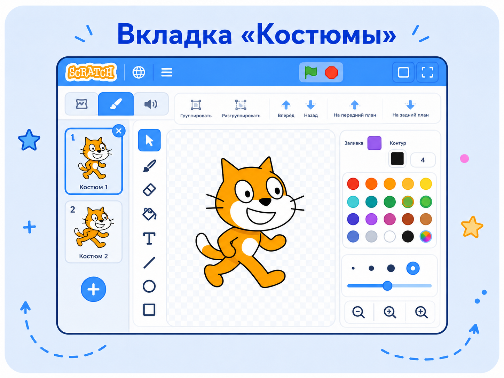
Вкладка «Костюмы»
На вкладке «Костюмы» можно увидеть, добавить или изменить внешний вид спрайта.
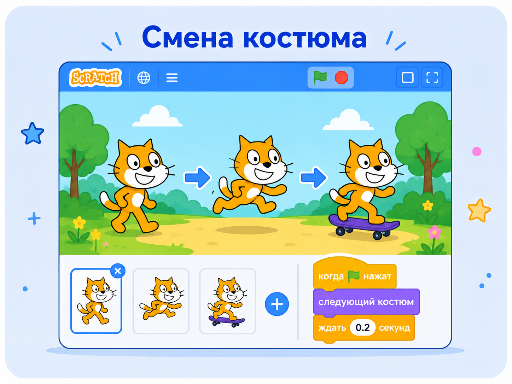
Смена костюма
Команда «следующий костюм» позволяет создать простую анимацию.
Пример
Чтобы персонаж выглядел так, будто он идёт, можно поместить в цикл команды: «идти 10 шагов», «следующий костюм», «ждать 0.2 секунды». Тогда спрайт будет двигаться и менять внешний вид.
Библиотека сцен и фонов
Сцена в Scratch может иметь разные фоны. Фон задаёт место действия: комнату, улицу, лес, космос, школу, спортивную площадку или любую другую обстановку.
Фоны можно выбирать из библиотеки, рисовать самостоятельно или загружать с компьютера. В одном проекте может быть несколько фонов, которые меняются во время выполнения программы.
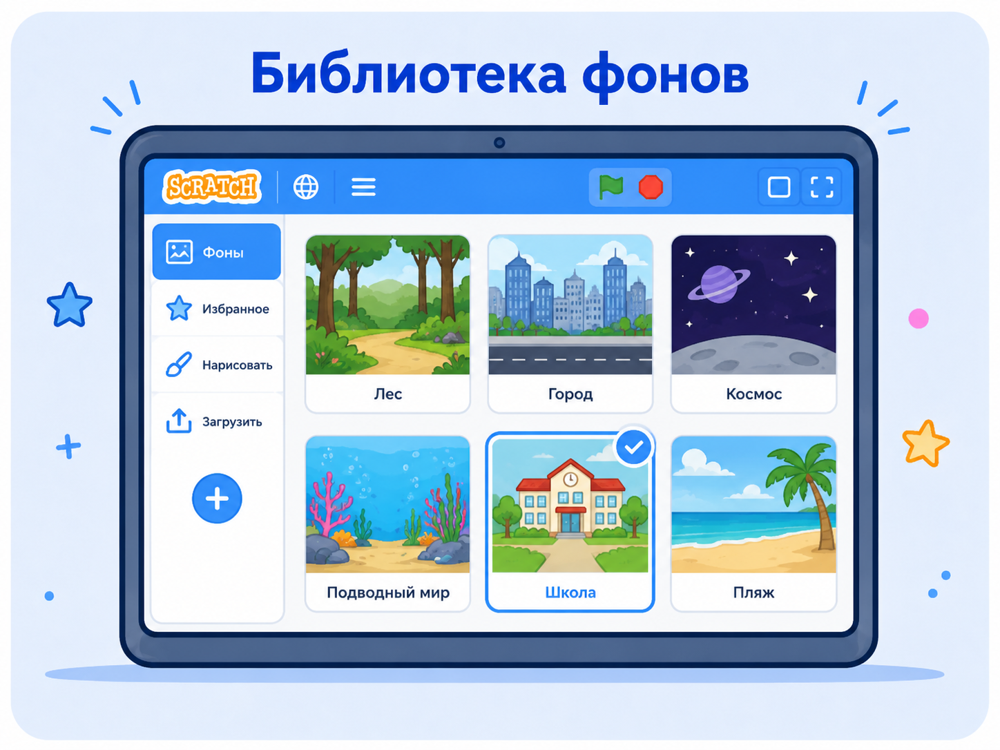
Библиотека фонов
В библиотеке можно выбрать готовую сцену для проекта.
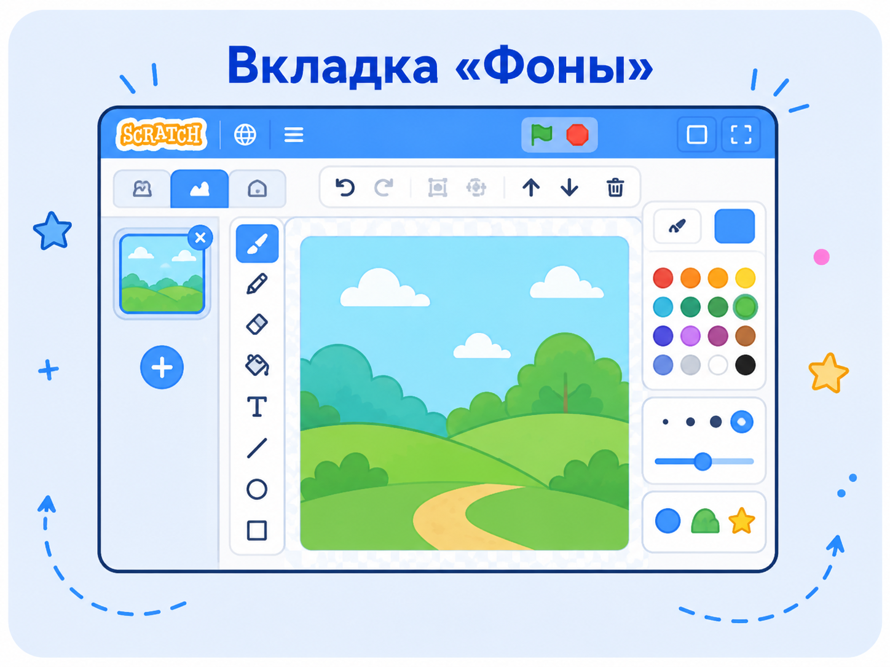
Вкладка «Фоны»
На вкладке «Фоны» можно изменить, нарисовать или добавить новый фон.
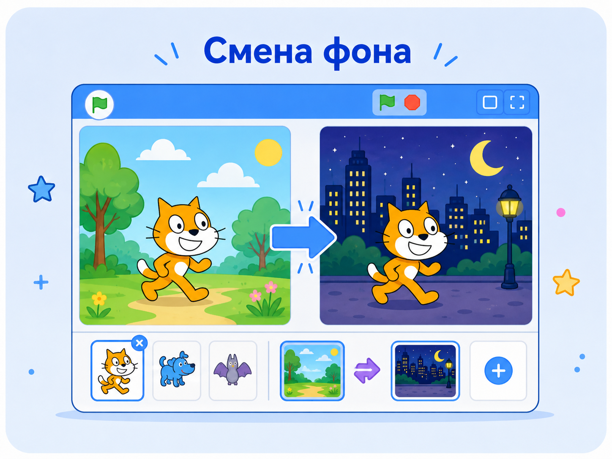
Смена фона
Смена фона помогает показать переход между разными сценами проекта.
Проверь себя: что изменится?
Нажмите на ситуацию, чтобы увидеть пояснение.
Персонаж изменит внешний вид. Если повторять эту команду в цикле, можно создать простую анимацию.
На сцене изменится место действия. Например, персонаж может перейти из комнаты на улицу или в космос.
Персонаж будет несколько раз двигаться и менять внешний вид. Так можно создать эффект ходьбы или танца.
Практический блок
Практическая часть занятия направлена на знакомство с алгоритмами в стиле Scratch, выбором персонажей, работой с костюмами и сценами. Обучающиеся создают простой проект, в котором персонаж появляется на сцене, говорит фразу, двигается и меняет внешний вид.
Задание 1. Знакомство с интерфейсом Scratch
Цель: найти основные области Scratch и понять, где создаётся программа.
- Откройте среду Scratch.
- Найдите сцену, на которой отображается персонаж.
- Найдите область программирования.
- Найдите список спрайтов.
- Найдите палитру блоков.
- Посмотрите, какие категории блоков доступны.
Подсказка: сцена обычно расположена справа, блоки — слева, а область составления программы находится в центре.
Задание 2. Первый алгоритм из блоков
Цель: составить простой алгоритм для персонажа.
Создайте программу, в которой персонаж после нажатия на зелёный флажок говорит приветствие и делает несколько шагов.
- Выберите блок «когда флажок нажат».
- Добавьте блок «сказать Привет!».
- Добавьте блок «идти 10 шагов».
- Запустите проект с помощью зелёного флажка.
- Проверьте, выполнил ли персонаж команды по порядку.
Подсказка: программа должна начинаться с события. Без стартового блока персонаж не поймёт, когда нужно выполнять команды.
Задание 3. Работа с библиотекой спрайтов
Цель: выбрать нового персонажа из библиотеки Scratch.
- Откройте библиотеку спрайтов.
- Выберите персонажа, который подходит для вашего проекта.
- Добавьте его на сцену.
- Удалите лишнего персонажа, если он не нужен.
- Проверьте, что выбранный спрайт отображается в списке персонажей.
Подсказка: персонаж должен подходить к идее проекта. Например, для сцены в космосе можно выбрать ракету или космонавта.
Задание 4. Работа с костюмами
Цель: научиться менять внешний вид персонажа.
Откройте вкладку «Костюмы» и посмотрите, какие костюмы есть у выбранного персонажа. Затем создайте программу, где персонаж меняет костюм.
- Выберите спрайт.
- Откройте вкладку «Костюмы».
- Посмотрите, сколько костюмов есть у персонажа.
- Вернитесь во вкладку «Код».
- Добавьте команду «следующий костюм».
- Запустите программу и проверьте изменение внешнего вида.
Подсказка: чтобы смена костюмов была заметной, добавьте блок ожидания между переключениями костюмов.
Задание 5. Создание анимации движения
Цель: соединить движение и смену костюмов.
Создайте программу, в которой персонаж двигается по сцене и меняет костюм, создавая эффект ходьбы.
- Добавьте блок «когда флажок нажат».
- Добавьте блок «повторить 10 раз».
- Внутрь цикла поместите блок «идти 10 шагов».
- Добавьте блок «следующий костюм».
- Добавьте блок «ждать 0.2 секунды».
- Запустите программу и оцените результат.
Подсказка: если персонаж двигается слишком быстро, увеличьте время ожидания.
Задание 6. Работа с библиотекой сцен
Цель: выбрать фон для проекта.
- Откройте библиотеку фонов.
- Выберите фон, который подходит к вашему персонажу.
- Добавьте фон на сцену.
- Проверьте, как персонаж выглядит на выбранной сцене.
- При необходимости измените размер или положение персонажа.
Подсказка: фон должен помогать раскрывать сюжет проекта. Например, для прогулки подойдёт улица, парк или школьный двор.
Задание 7. Смена сцены
Цель: научиться менять фон во время выполнения программы.
Создайте программу, в которой после реплики персонажа меняется фон сцены.
- Добавьте два разных фона.
- Выберите персонажа.
- Добавьте блок «когда флажок нажат».
- Добавьте блок «сказать...».
- Добавьте команду смены фона.
- Запустите программу и проверьте смену сцены.
Подсказка: смену фона удобно использовать, если в проекте есть несколько мест действия.
Примеры программ
В этом разделе представлены примеры небольших программ в стиле Scratch. Их можно использовать для объяснения алгоритмов, движения, смены костюмов и работы со сценами.
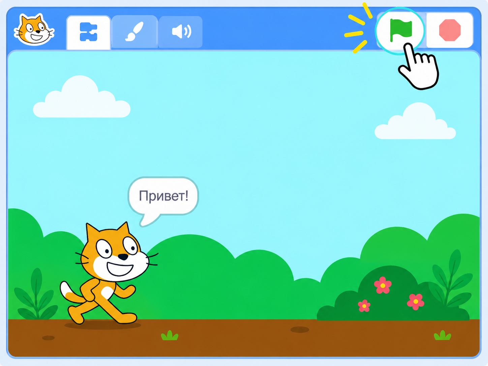
Запуск по флажку
Тип: событие.
Программа начинается после нажатия зелёного флажка. Это самый распространённый способ запуска проекта.
Скачать пример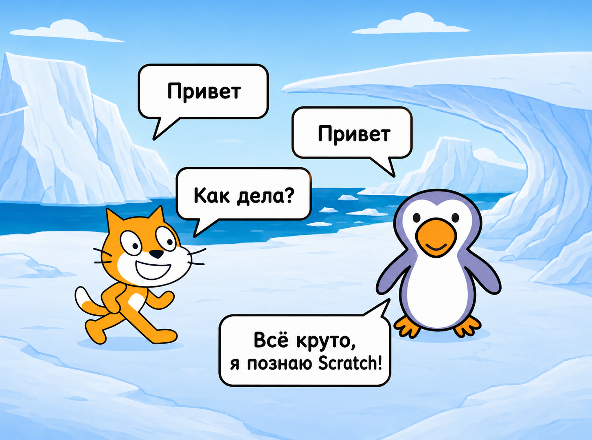
Реплика персонажа
Тип: внешний вид.
Персонаж выводит фразу на сцене. Это помогает создавать диалоги и сюжетные сцены.
Скачать пример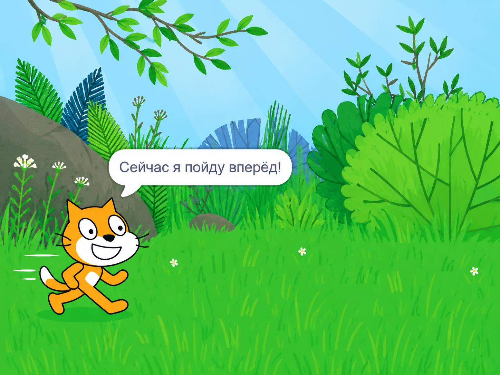
Движение
Тип: движение.
Персонаж перемещается по сцене с помощью команд движения.
Скачать пример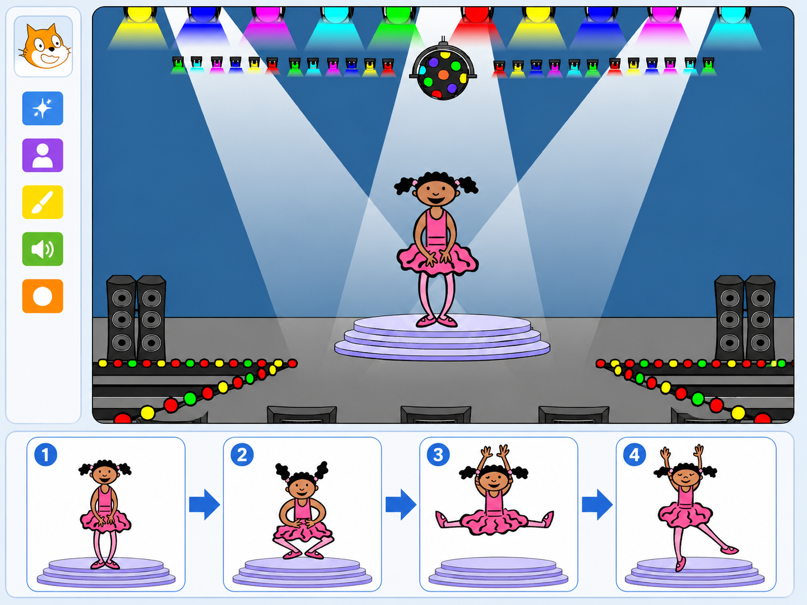
Смена костюма
Тип: анимация.
Персонаж меняет костюм, за счёт чего создаётся эффект движения.
Скачать пример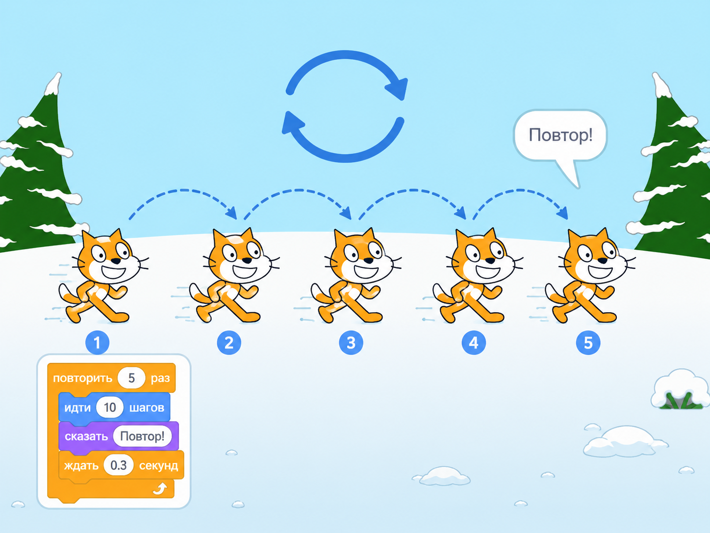
Цикл
Тип: управление.
Команды внутри цикла повторяются несколько раз или бесконечно.
Скачать пример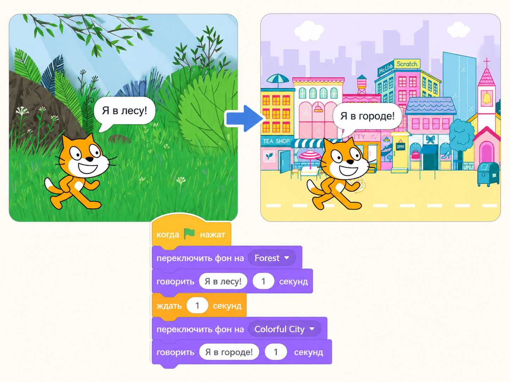
Смена фона
Тип: сцена.
Фон сцены меняется, чтобы показать новое место действия.
Скачать примерВопросы для самопроверки
1. Что такое алгоритм в стиле Scratch?
Это последовательность команд, составленная из цветных блоков Scratch. Блоки соединяются между собой и выполняются в заданном порядке.
2. Что такое спрайт?
Спрайт — это персонаж или объект проекта, которым можно управлять с помощью программных блоков.
3. Для чего нужна сцена?
Сцена — это область, где происходит действие проекта. На ней отображаются персонажи, фоны и анимация.
4. Что такое костюм спрайта?
Костюм — это внешний вид спрайта. Один персонаж может иметь несколько костюмов.
5. Для чего используется смена костюмов?
Смена костюмов используется для создания анимации. Например, можно показать ходьбу, прыжок или танец персонажа.
6. Для чего нужна библиотека сцен?
Библиотека сцен нужна для выбора фонов, которые задают место действия проекта.
7. Какой блок чаще всего запускает программу в Scratch?
Чаще всего программа запускается блоком «когда флажок нажат».
8. Для чего используется цикл?
Цикл используется для повторения команд. Например, можно несколько раз повторить движение и смену костюма.
9. Почему важен порядок блоков в программе?
Команды выполняются в заданном порядке. Если изменить порядок блоков, поведение персонажа тоже изменится.
10. Как можно создать простую анимацию персонажа?
Можно использовать команды движения, смены костюма и ожидания, поместив их в цикл.